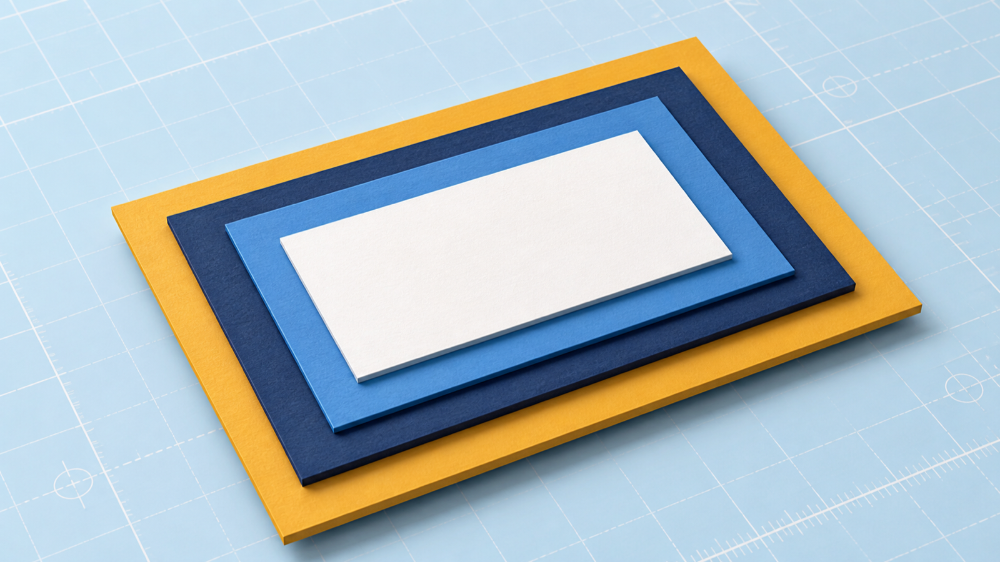
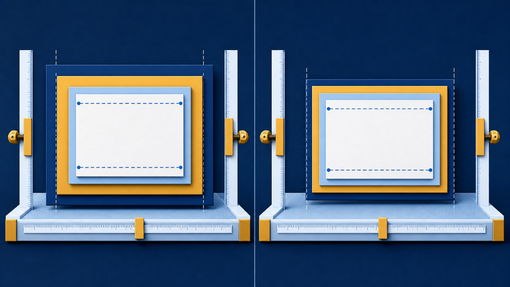
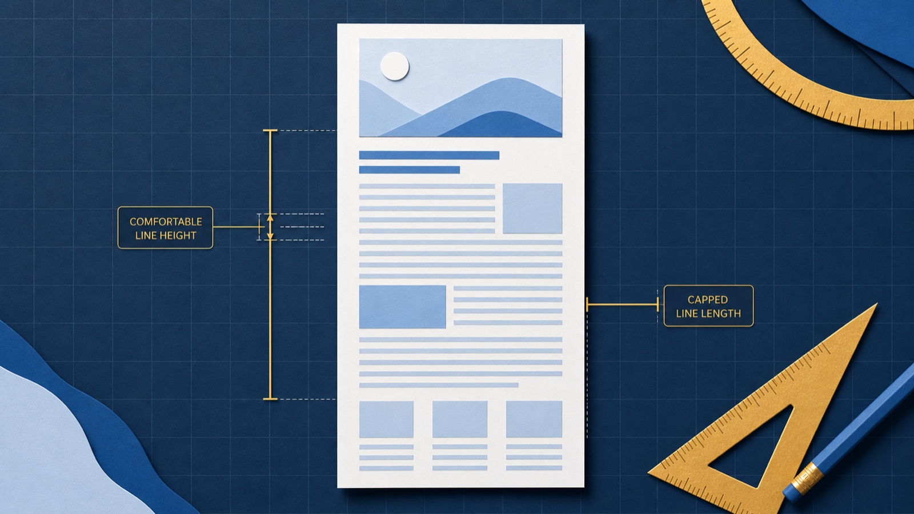

Measure
Read content, padding, border, and margin.
The colors are right. Why does the site still feel cramped?
Read content, padding, border, and margin.
Write spacing, width, and type rules that hold up.
Use DevTools and four readability checks.

Text touches its color? Add padding. Neighbors crowd? Add margin.
A caption touches its sand frame. The figure presses against the paragraph above it.
.event-notice {
width: 300px;
padding: 24px;
border: 3px solid #268080;
margin-bottom: 16px;
}Every number in the pane has a rule behind it.
padding: 24px;all four sides
padding: 8px 20px;vertical · horizontal
padding: 24px 32px 16px 32px;top · right · bottom · left
border: 3px solid #deb887;Width, style, color.
Two 24px margins meet as 24px, not 48px.
top → right → bottom → leftTwo values pair opposite sides: vertical, then horizontal.
main {
max-width: 640px;
margin: 0 auto;
}width: 400px;
padding: 20px;
border: 5px solid;
* {
box-sizing: border-box;
}Padding now carves inward instead of growing outward.
Georgiafirst choice→
2"Times New Roman"close backup→
3serifgeneric safety net
Quote names with spaces. End with a generic family.
h2 { font-size: 1.5rem; }
Drive Day24px
Drive Day30px
h2 { font-size: 16px; }
Drive Day16px
Drive Day16px
Too big? Change font-size, never the heading's rank.
text-alignLeft for body text. Center short display lines.
text-transformCaps for labels, not paragraphs.
text-decorationKeep body-link underlines.
line-height: 1.5Give body text room to breathe.
Bring chargers, cables, and any laptop the club can refurbish. Volunteer sign-up for the fall drive closes Friday, October 2, at 5:00 p.m.
01Contrastink on white · 12.63:1✓ pass
02Size16px, the browser's default✓ pass
03Line height1.5 on body text✓ pass
04Line lengthcolumn capped at 640px✓ pass

Estimated lab time: 5-6 hours
Exit ticket: A reminder's text touches its colored edge, and the page runs too wide. Name the property that fixes each defect and explain why.
Next: arrange these boxes along a line with Flexbox.